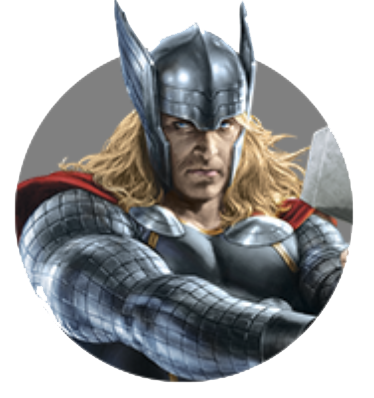

THOR ODINSON
by Maksim4ik
Posted on Mart 2, 2019 at 12:00 PM
ТОР ОДИНСОН
THOR ODINSON
Тор Одинсон (Thor Odinson) — принц Асгарда и бывший член команды Мстителей. Когда его безответственные действия повлекли за собой угрозу его родному миру, Тор был лишен своих сил и изгнан на Землю своим отцом Одином, царем Асгарда. Будучи в изгнании, Тор научился смирению, влюбился в доктора Джейн Фостер и спас своих новых друзей от разрушительной угрозы, посланной его завистливым сводным братом Локи, мечтающим захватить трон Асгарда. Тор смог остановить Локи, в результате чего был прощен Одином и получил свою силу назад.
МНЕ ПРИВЫЧНЕЙ НЕ БЕЖАТЬ ОТ ПРОБЛЕМ, А РЕШАТЬ ИХ. ПРОСТО СТРАСТЬ У МЕНЯ К ГЕРОЙСТВУ. Спустя год, Тору пришлось вернуться на Землю, чтобы вновь помешать планам Локи, который, потерпев поражение в попытке захватить Асгард, собирался поработить Землю с помощью инопланетной расы Читаури. Тор присоединился к команде Мстителей и, в результате продолжительной битвы, они одержали победу над Локи и читаури. После спасения Земли, Тор вернулся в Асгард и помог Асгардским армиям с восстановлением спокойствия в Девяти мирах. Затем, Тор, с помощью своих союзников из Асгарда и с Земли, остановил угрозу в лице Тёмных эльфов, древней расы, стремящейся погрузить все миры в состояние тьмы с помощью Эфира.
Во время того, когда он был на Земле, Тор помогал Мстителям, во время того, как они сражались с ГИДРОЙ. После победы над ГИДРОЙ, команда стала останавливать Альтрона, создание Тони Старка . После победы Тор вернулся в Асгард, так как он видел видения Алой Ведьмы, что Асгард падёт из-за него и Тор хочет найти все Камни бесконечности. После ухода Тора Асгардом правил Локи, Тор с братом хотят найти Одина, так как без него в Асгарде большие проблемы.
Тор, вместе с его братом стал искать своего отца на Земле. Тор обращается за помощью к Доктору Стрэнджу и к Мастерам мистических искусств. Но тот опаздывает, Тор не успевает спасти Одина от смерти, и тогда Тор с Локи встречают Хелу, богиню смерти, первого ребёнка Одина и свою сестру. Хела одной рукой ловит, а потом ломает Мьёльнир и отправляет их на Сакаар, где он участвует в Битве чемпионов, против своего коллеги Халка. Затем они сбегают с Сакаара с Валькирией. Тор сражается с Хелой, и из-за Рагнарёка , Асгард разрушается и новый король выводит Асгардцев из Асгарда.
Могущественный бог грома Тор, достойный носить величайшее оружие во вселенной – волшебный молот Мьёльнир — никогда не перестаёт сражаться за правое дело и защищать любимую Землю.
About

Maksim4ik
Age:14
Sex:male
maksdrobotushchenko@gmail.com